목차
Zuna Facecap은 폰 카메라로 표정과 고개 움직임을 읽어 Wi-Fi로 iFacialMocap을 지원하는 PC 프로그램에 보내요. iFacialMocap은 이 프로그램들이 아이폰 얼굴 추적에 쓰는 방식이에요. 아이폰이 없어도 돼요.
같은 폰으로 팔·손가락·방송 덱까지 쓰고 싶다면? Zuna Studio로 더 많이를 보세요. 요청하면 받을 수 있어요.
짧게 요약: 앱 설치 → 카메라 허용 → 얼굴에서 40cm쯤에 거치대로 폰 세우기 → PC 프로그램에서 iFacialMocap 트래커를 고르고 앱에 보이는 폰 주소 입력 → 추적 시작 → 보정 한 번.
| 함께 쓰는 프로그램 | Warudo, VSeeFace, VNyan 등 iFacialMocap / 아이폰 트래커를 받는 프로그램. VMC 방식으로 받는 프로그램도 지원해요 (고급). |
| 보내는 것 | ARKit 방식 표정값 51개 + 고개 회전·위치, UDP 포트 49983 |
| 개인정보 | 영상은 폰 안에서만 분석하고 녹화·업로드하지 않아요. PC로는 추적 숫자만 내 Wi-Fi로 보내요. |
| 언어 | English, 한국어, 日本語, 简体中文 (설정 → 언어) |
| 문의 | maxjang123@gmail.com · 설정 → 도움말·문의 |
1. 기기 요구 사항
| 최소 | 권장 | |
|---|---|---|
| Android | Android 10 이상 | Android 13 이상 |
| 프로세서 | 64비트(ARM64). 32비트 전용 폰은 설치할 수 없어요. | 2021년 무렵 이후 출시된 중급 이상 칩 |
| 메모리 | 4GB | 6GB 이상 |
| 카메라 | 전면 또는 후면 | 전면, 상반신까지라면 후면 넓게(초광각) |
| 네트워크 | 폰과 PC가 같은 Wi-Fi·공유기 | 5GHz Wi-Fi, PC는 유선 또는 5GHz |
| 그 밖에 | — | 폰 거치대나 삼각대, 오래 방송할 때 충전기 |
갤럭시 S24 Ultra(Android 16)에서 개발·확인했어요. 60fps 카메라 설정에서 얼굴 추적 약 40fps가 나와요. 더 오래되거나 보급형 폰도 되지만 추적 속도가 낮아요. 느리다면 상반신, 손, 60fps 추적을 꺼 보세요.
앱의 설정 → 도움말·문의 → 기기 요구 사항에서 내 폰의 Android 버전과 메모리를 볼 수 있고, 메모리가 적으면 알려 줘요.
왜 64비트만 되나요?
얼굴·몸·손 모델은 Google MediaPipe로 돌아가요. 오래된 32비트 폰용 라이브러리까지 넣으면 앱이 두 배 넘게 커지고, 그런 폰은 어차피 부드럽게 추적하기 어려워요.
2. 설치
- Zuna Facecap을 설치하세요 (Google Play, 또는 받은 APK).
- 앱을 열면 처음 사용 안내가 저절로 시작돼요.
APK로 바로 설치하면 Android가 브라우저나 파일 앱의 설치 허용을 물을 수 있어요. 한 번만 하면 되는 Android 설정이에요.
3. 처음 켜기
처음 켜면 5단계 안내가 열려요. 건너뛰기할 수 있고, 언제든 설정 → 도움말·문의 → 처음 사용 안내 다시 보기로 다시 볼 수 있어요.
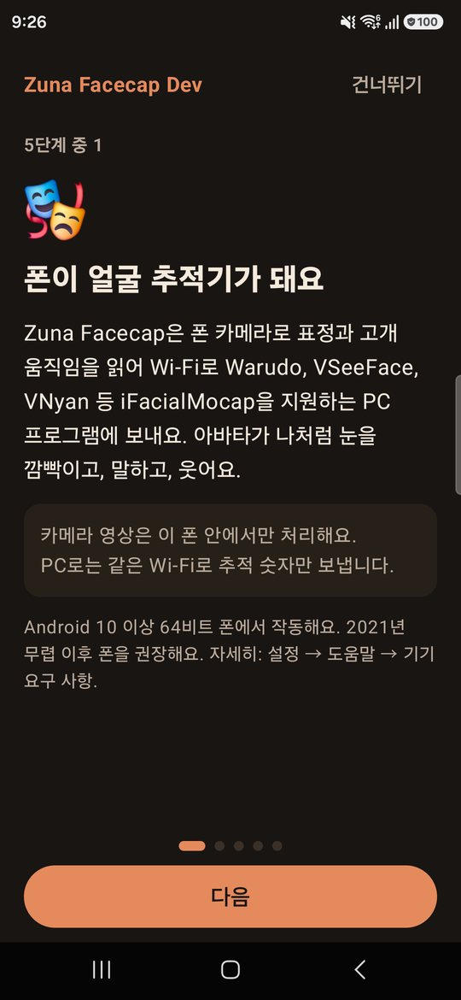
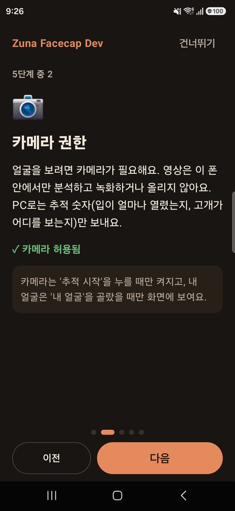
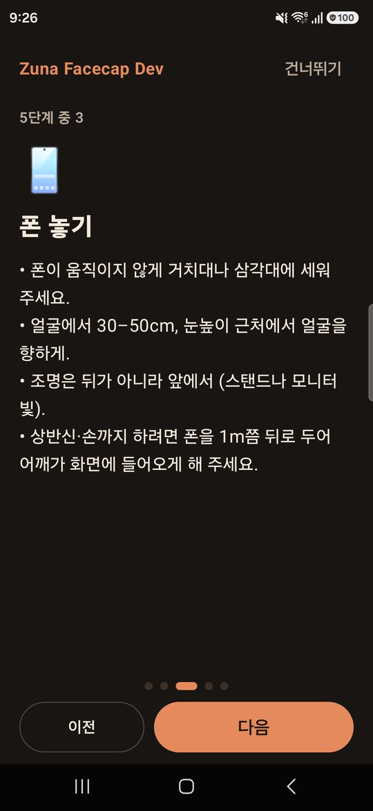
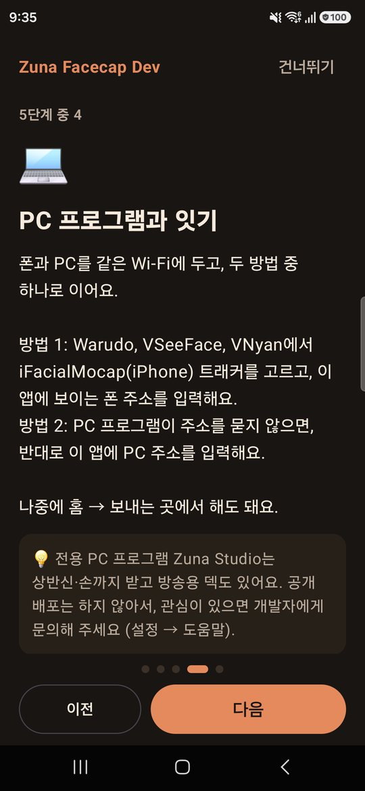
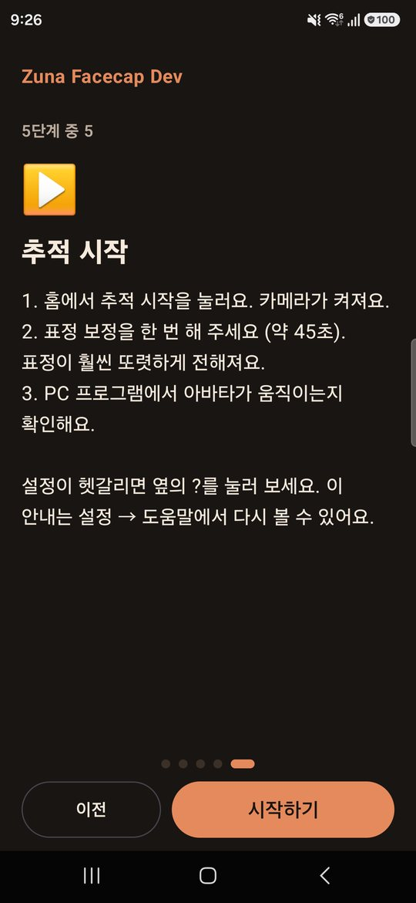
폰 놓기
- 폰이 움직이지 않게 거치대나 삼각대에 세워요.
- 얼굴에서 30–50cm, 눈높이 근처에서 얼굴을 향하게.
- 조명은 뒤가 아니라 앞에서 (스탠드나 모니터 빛).
- 상반신이나 손까지 하려면 폰을 1m쯤 뒤로 두어 어깨가 화면에 들어오게 해요.
카메라는 추적 시작을 눌러야 켜져요. 홈에는 내 표정을 따라 하는 캐릭터가 보이고, 위 오른쪽의 내 얼굴을 고르면 추적 점이 있는 카메라 화면을 볼 수 있어요.

4. Warudo · VSeeFace · VNyan과 잇기
폰과 PC를 같은 Wi-Fi에 두세요. 홈에서 보내는 곳을 누르고 PC 프로그램 (iFacialMocap)이 골라져 있는지 확인해요 (기본값).
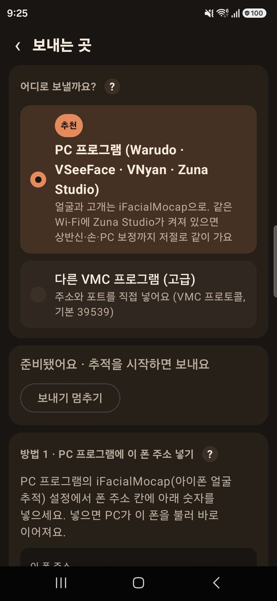
잇는 방법은 두 가지예요. 둘 중 하나만 쓰면 돼요.
| 방법 1 · PC 프로그램에 폰 주소 넣기 | 방법 2 · 폰에 PC 주소 넣기 | |
|---|---|---|
| 언제 | PC 프로그램이 폰 IP 주소를 물을 때 (VSeeFace, VNyan, Warudo) | PC 프로그램이 기다리기만 하고 주소를 묻지 않을 때 |
| 어디에 | PC 프로그램 | Zuna Facecap → 보내는 곳 → PC 주소 |
| 무엇을 | 이 폰 주소 아래 큰 숫자, 예: 192.168.0.178 | PC의 IPv4 주소, 예: 192.168.0.217 |
| 포트 | 49983 (고정) | 49983 (고정) |

?가 붙은 항목은 누르면 짧은 설명이 나와요. 설정이 헷갈릴 때 눌러 보세요.
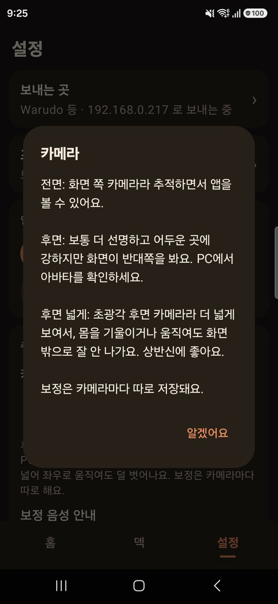
Warudo
- Warudo에서 캐릭터 Setup을 열고 얼굴 추적으로 iFacialMocap(iPhone / iFacialMocap)을 골라요.
- Zuna Facecap에 보이는 폰 주소를 넣어요 (방법 1). Warudo가 주소를 묻지 않으면 방법 2로 앱에 PC 주소를 넣어요.
- 폰에서 추적 시작을 눌러요.
VSeeFace
- General settings → iPhone/ARKit face tracking에서 iFacialMocap을 켜요 (Receive tracking data from iFacialMocap).
- Zuna Facecap의 폰 주소를 IP 칸에 넣고 연결해요.
- 폰에서 추적 시작을 눌러요. 폰 추적만 쓸 거면 VSeeFace의 웹캠은 *None*으로 두세요.
VNyan
- Settings → Tracking → ARKit / iPhone tracking에서 iFacialMocap을 골라요.
- Zuna Facecap의 폰 주소를 넣고 받기를 시작해요.
- 폰에서 추적 시작을 눌러요.
메뉴 이름은 프로그램 버전·언어마다 달라요. "iFacialMocap"이나 "iPhone tracking"을 찾으면 순서는 같아요.
PC 주소는 어떻게 찾나요? (방법 2)
- Win + R을 누르고
cmd를 입력한 뒤 Enter. ipconfig를 입력하고 Enter.- 쓰고 있는 어댑터(Wi-Fi 또는 이더넷) 아래 IPv4 주소를 적어요. 예:
192.168.0.217
집 네트워크 안의 주소예요. 인터넷 주소가 아니에요.
다른 VMC 프로그램 (고급)
iFacialMocap 대신 VMC 방식으로 받는 프로그램도 있어요. *보내는 곳*에서 다른 VMC 프로그램을 고르고 받는 PC 주소와 포트(보통 39539)를 넣어요. EyeBlinkLeft처럼 Perfect Sync 이름을 쓰는 프로그램이면 대문자 이름을 켜세요. 이 방식은 얼굴과 고개만 보내요.
5. 보정
사람마다 무표정이 다르고, 추적기는 쉬는 얼굴에서 딱 0, 최대에서 딱 100이 잘 안 나와요. 표정 보정은 내 무표정과 표정마다 얼마나 움직이는지를 재서, 내가 입을 다물면 아바타도 다물고 웃으면 활짝 웃게 해요.
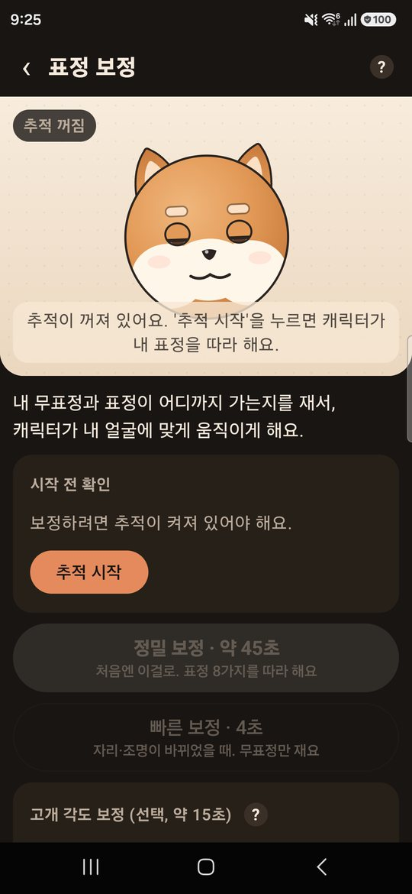
| 걸리는 시간 | 언제 | |
|---|---|---|
| 정밀 보정 | 약 45초, 표정 8가지 | 처음 한 번 |
| 빠른 보정 | 4초, 무표정만 | 폰을 옮기거나 조명이 바뀐 뒤 |
| 고개 각도 보정 (선택) | 약 15초 | 폰이 얼굴보다 아래·위에 있을 때 |
| 몸 자세 (선택) | 4초 | 상반신을 켰고 폰이 옆에 비스듬히 있을 때 |
보정은 카메라마다 저장되고 Download/ZunaFacecap/zuna-facecap-calibration.json에 백업돼요. 다시 설치하거나 새 폰으로 옮기면 다시 보정하지 말고 보정 불러오기를 쓰세요.
6. 설정 설명
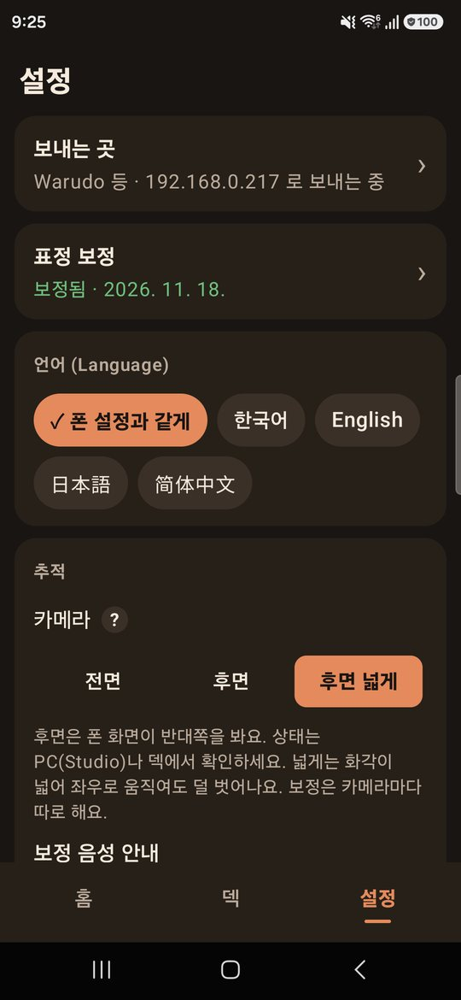
| 설정 | 하는 일 | 팁 |
|---|---|---|
| 카메라: 전면 / 후면 / 후면 넓게 | 어느 카메라로 추적할지 | 전면은 앱을 보면서. 후면은 보통 더 선명. 후면 넓게(초광각)는 몸을 기울여도 화면 안에 |
| 보정 음성 안내 | 보정 단계를 소리로 읽어 줘요 | 화면이 안 보이는 후면 카메라일 때 |
| 상반신 | 어깨와 팔 추적 | Zuna Studio 전용. 폰을 1m쯤 떨어뜨려요 |
| 손 | 손가락 추적 | Zuna Studio 전용. fps가 조금 내려가요 |
| 60fps 추적 | 더 빠른 카메라 | 더 부드럽지만 발열·배터리가 늘어요 |
| 앱을 열면 바로 추적 | 추적 시작을 안 눌러도 돼요 | 기본 꺼짐 |
| 화면 꺼져도 추적 유지 | 화면을 꺼도 뒤에서 계속 | 그동안 알림이 떠 있어요. 충전하면서 쓰세요 |
| 윙크 보정 | 윙크가 윙크로 보이게 | 기본 켜짐 |
| 튐 막기 | 고개·얼굴이 한 프레임 동안 말도 안 되게 튀는 것을 걸러요 | 진짜 빠른 움직임은 한 프레임(약 0.02초) 늦게 전해져요 |
| 좌우 바꾸기 | 좌우를 맞바꿔요 | PC 프로그램에서 좌우가 반대로 보일 때만 |
| 녹화 | 표정값을 JSON으로 저장 (영상 없음) | 시험용 |
| 진단 | fps, 지연, 처리 장치, 배터리, 발열 | 느릴 때 먼저 여기를 보세요 |
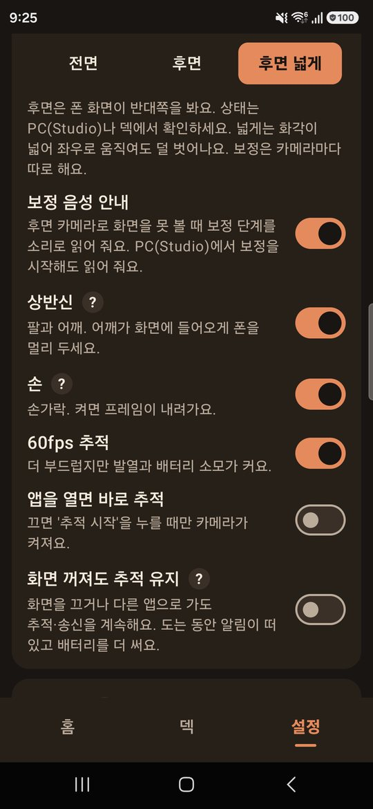
7. Zuna Studio로 더 많이
Zuna Studio는 Zuna Facecap을 위해 만든 전용 Windows 프로그램이에요. Warudo, VSeeFace, VNyan용 얼굴 추적은 Studio 없이도 돼요. Studio를 쓰면 같은 폰으로 아바타를 훨씬 더 많이 움직이고, 방송 전체를 폰으로 다룰 수 있어요.
관심 있으세요? Zuna Studio는 요청하면 받을 수 있어요. Zuna Studio 문의하기 — 메일로 답드려요.
왜 Zuna Studio인가요?
폰 하나로 PC에 전해지는 것:
| 폰 → Warudo / VSeeFace / VNyan | 폰 → Zuna Studio | |
|---|---|---|
| 얼굴과 고개 | ✓ | ✓ |
| 어깨와 팔 | — (다른 트래커 필요) | ✓ 같은 폰으로 |
| 손가락 | — (다른 트래커 필요) | ✓ 같은 폰으로 |
| PC에서 시작하는 보정 + 폰 음성 안내 | — | ✓ |
| 폰·태블릿 방송 덱 | — | ✓ |
| 내 폰만 아바타를 움직이게 (폰 등록) | — | ✓ |
Studio가 더해 주는 것
| 추적 | 아바타 |
|---|---|
|
|
| 방송 | 안심 |
|
|
 폰의 덱 (덱 탭) |
|
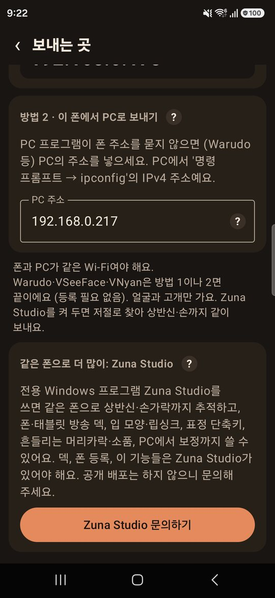 앱 안: Studio가 더해 주는 것과 문의 버튼 |
 처음 한 번 PC에서 폰 허용 (4자리 숫자, 일본어 화면) |
이런 분께 좋아요
- 트래커를 더 사지 않고 팔과 손까지 움직이고 싶은 VTuber
- 옆에 둔 폰으로 OBS와 음악을 다루고 싶은 스트리머
- 맞춤 구성이나 제휴를 찾는 크리에이터·팀
Zuna Studio 받는 방법
Zuna Studio는 공개 배포하지 않아요. 문의하시면 메일로 답드려요.
- 앱에서: 설정 → 도움말·문의 → 비즈니스 문의, 또는 Zuna Studio 문의하기 버튼 (보내는 곳 화면, 덱 탭, 설정). 짧은 양식이 들어간 메일 앱이 열려요.
- 또는 메일: maxjang123@gmail.com
내 아바타 전용 Zuna Studio를 만들어 드려요. 아바타를 Studio 안에 맞춰 넣고(추적에 맞춘 표정, 상반신·손가락, 카메라 프리셋, 덱) 나만의 Windows 프로그램으로 전해 드려요. 그 사람만을 위한 빌드라 다른 사람에게는 주지 않아요.
보내 주실 것
| 필요한 것 | 이유 | |
|---|---|---|
| 1. 아바타 파일 | 다음 중 하나: VRChat 아바타 Unity 프로젝트나 .unitypackage (머티리얼·텍스처가 있는 Humanoid 프리팹) · 텍스처가 있는 FBX (Humanoid 리그) · VRM 파일 (0.x 또는 1.0) | 아바타가 프로그램 안에 들어가요. Studio는 Humanoid 뼈와 셰이프키로 움직여요 |
| 2. 셰이프키 | 모델에 있는 표정 셰이프키: ARKit / Perfect Sync (가장 좋아요), VRChat 입 모양 (vrc.v_aa…), VRM·MMD 표정, 또는 없음 | 자동으로 맞춰요. 없으면 깜빡임·모음·턱 뼈로 움직여요 |
| 3. 셰이더 | 쓰는 셰이더와 버전 (예: lilToon 2.x, Poiyomi) | Studio는 Unity 6(URP)에서 돌아가요. 셰이더에 따라 같은 모습을 내려면 맞는 버전이 필요해요 |
| 4. 라이선스 | 모델 이용 규약이나 판매 페이지 (예: BOOTH), 방송 사용과 수정이 허용되는지 | 모델이 프로그램 안에 들어가요. 라이선스가 허락하는 만큼만 만들어요 |
| 5. 그 밖에 (선택) | 표정·손 모양 애니메이션, 옷 토글·소품, 흔들림 뼈 (PhysBone 등) | 표정 단축키, 옷 소품, 흔들리는 머리카락용. 흔들림은 가능한 만큼 옮겨요 |
| 6. 사용 환경 | 폰 모델과 Android 버전 · Windows 10/11 (64비트), DirectX 12 그래픽 카드 · OBS Studio와 Spout2 플러그인 | Studio는 Spout2로 OBS에 투명 배경 화면을 보내요 |
| 7. 방송 구성 (선택) | OBS 장면 이름, 배경 그림, 상황별 배경음악, 원하는 카메라 구도 | 첫날부터 덱과 무대가 준비돼 있게 |
파일은 메일 첨부 대신 다운로드 링크로 보내 주세요 (Google Drive, Dropbox 등). 비밀번호는 보내지 마세요.
그냥 완성된 프로그램에 내 아바타를 넣으면 안 되나요?
FBX와 VRChat 아바타는 Unity 에디터가 변환해요 (머티리얼, 셰이더, Humanoid 설정). 완성된 Windows 프로그램은 혼자서 그걸 할 수 없어서, Unity에서 아바타를 준비해 Studio를 같이 빌드해요. VRM 파일을 프로그램이 직접 불러오는 판은 계획 중이지만 아직은 없어요.
덱 잇는 법
- PC에서 Zuna Deck이나 Zuna Studio를 켜요.
- 폰과 PC를 같은 Wi-Fi에 둬요.
- Windows 방화벽이 물으면 개인 네트워크를 허용해요.
- 처음 한 번 PC에 4자리 숫자가 떠요. 폰과 같으면 PC에서 허용해요.
태블릿이나 다른 폰은 같은 덱을 브라우저로 열 수 있어요.
8. 문제 해결
먼저 확인: 홈에 추적 중이 초록색인지, 보내는 곳에 *보내는 중*이 보이는지.
아바타가 전혀 안 움직여요
- 폰과 PC가 같은 Wi-Fi인가요? 게스트 네트워크나 일부 메시 공유기는 기기끼리 못 보게 막아요.
- 폰에서 추적 시작을 눌렀나요?
- 방법 1: PC 프로그램에 넣은 숫자가 *이 폰 주소*와 똑같나요? 폰이 Wi-Fi에 다시 붙으면 바뀔 수 있어요.
- 방법 2: PC 주소가 맞나요? (
ipconfig→ IPv4) - Windows 방화벽: PC 프로그램이 개인 네트워크에서 허용돼 있어야 해요. Windows에서 Wi-Fi가 개인 네트워크로 되어 있는지도 확인하세요.
- 폰이나 PC에 VPN이 켜져 있나요? 끄고 다시 해 보세요.
- Android 17: 앱이 물으면 근처 기기를 허용하세요 (설정 → 애플리케이션 → Zuna Facecap → 권한).
"얼굴 없음"이 뜨거나 얼굴을 자꾸 놓쳐요
- 앞쪽 조명을 밝게 하세요. 어두운 방이 가장 흔한 원인이에요.
- 폰을 30–50cm 거리에서 얼굴을 향하게 두세요.
- 다른 카메라로 바꿔 보세요 (설정 → 카메라).
입이 살짝 벌어진 채로 있거나 표정이 약해요
정밀 보정을 해 주세요. 폰을 옮겼거나 조명이 바뀌었으면 빠른 보정을. 폰이 얼굴보다 아래에 있으면 고개 각도 보정도 해 보세요.
좌우가 반대예요
설정 → 표정 세부 → 좌우 바꾸기를 켜세요. 보통 *Left*는 내 왼쪽이에요.
추적이 느리거나 폰이 뜨거워요
- 상반신, 손, 60fps 추적을 꺼 보세요.
- 두꺼운 케이스를 빼고 햇빛을 피하세요.
- 설정 → 진단에서 처리 장치(보통 GPU가 빨라요)과 *발열*을 보세요.
다른 앱으로 가거나 화면이 꺼지면 추적이 멈춰요
설정 → 화면 꺼져도 추적 유지를 켜세요. 폰이 백그라운드 앱을 끈다면 Zuna Facecap을 배터리 최적화에서 빼 주세요.
9. 자주 묻는 질문
아이폰이나 iFacialMocap 앱이 필요한가요?
아니요. Zuna Facecap이 안드로이드에서 같은 방식으로 보내서, PC 프로그램은 iFacialMocap으로 알아봐요.
카메라 영상이 어디로 가나요?
아무 데도 안 가요. 영상은 폰 안에서만 분석하고 녹화·업로드하지 않아요. 추적 숫자만, 연결한 PC로만 보내요.
인터넷이 필요한가요?
아니요. 추적은 집 Wi-Fi 안에서만 오가요. 인터넷은 앱 업데이트 확인에만 써요.
Warudo · VSeeFace · VNyan에서 몸과 손도 움직이나요?
이 프로그램들은 iFacialMocap으로 얼굴과 고개를 받아요. 같은 폰으로 상반신·손가락까지 하려면 Zuna Studio를 쓰세요.
후면 카메라를 쓸 수 있나요?
네. 설정 → 카메라 → 후면 또는 후면 넓게. 화면을 못 봐도 보정할 수 있게 음성 안내를 켜 두세요.
Zuna Studio가 꼭 있어야 하나요?
Warudo, VSeeFace, VNyan에는 필요 없어요. Studio는 같은 폰으로 더 많은 것을 해요: 상반신·손가락, 방송 덱, 입 모양·립싱크, 소품, PC에서 보정. 요청하면 받을 수 있어요: Zuna Studio 받는 방법.
10. 버그 신고·문의
설정 → 도움말·문의에 버튼이 두 개 있어요:
| 버튼 | 열리는 것 | 미리 채워지는 것 |
|---|---|---|
| 버그 신고 | 메일 앱 | 앱 버전·폰 모델이 들어간 제목, 기기·Android 버전·앱 버전(versionCode)·언어가 들어간 본문. 무슨 일이 있었는지만 쓰면 돼요. |
| 비즈니스 문의 | 메일 앱 | Zuna Studio 사용, 제휴, 협업을 위한 제목과 짧은 양식 |
메일 앱이 없으면 주소와 주소 복사 버튼이 나와요.
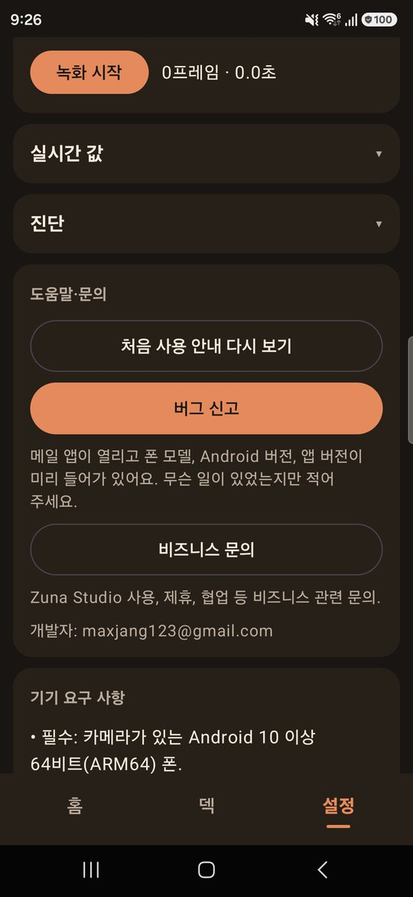
maxjang123@gmail.com